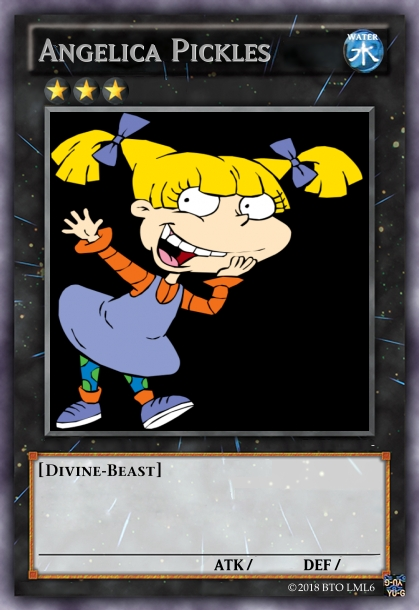
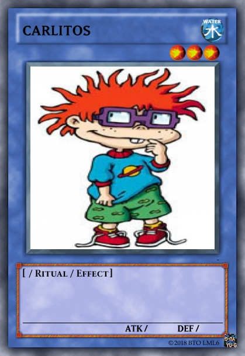
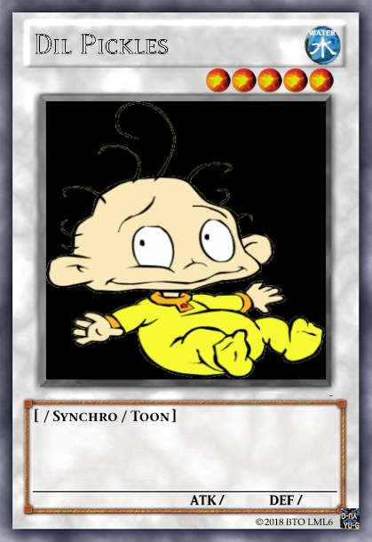
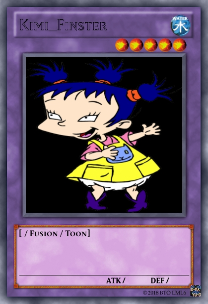
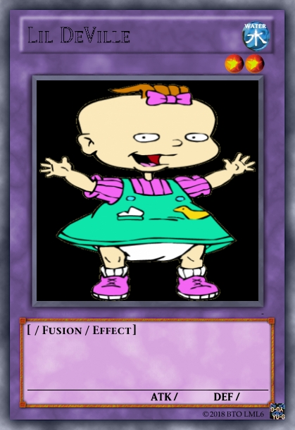
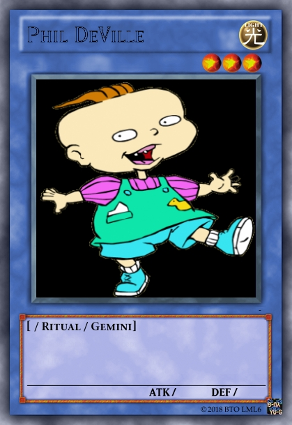
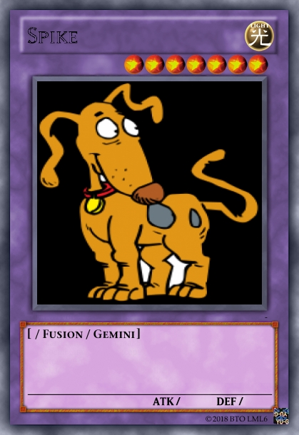
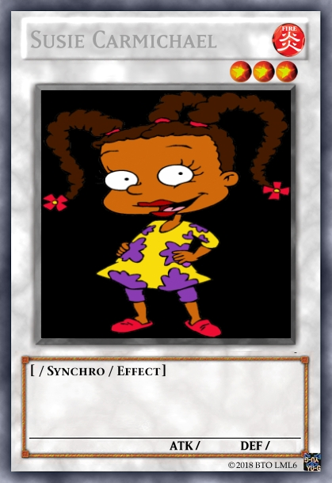
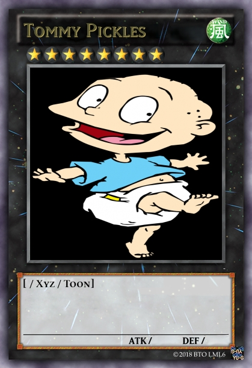

También conocida como ‘Ricos y Mocosos’, ‘Los Rugrats’ es una serie original del canal infantil de cable Nickelodeon que contaba la historia de ocho bebés en una casa y su irreal mundo imaginario paralelo “al de los mayores”. Fue una revolución tanto en su género como a nivel mundial en la década de los 90, y a día de hoy, ‘Los Rugrats‘ cuentan con nueve reconocidos premios internacionales, entre los que se encuentran varios Daytime Emmys.
Como la gran mayoría de producciones de Nickelodeon en la década de los 90 y principios de la del 2000, la serie es sobresaliente. Una sintonía inconfundible con un reparto de bebés mítico y singular como ninguna otra serie que los convirtió en únicos: Desde el líder de la pandilla, el pobre chico al que siempre le tocan todos los marrones, un perro más humano que perro hasta una autoritaria prima mayor capaz de aprovecharse de todos y cada uno de los bebés.
 
 
 
 
